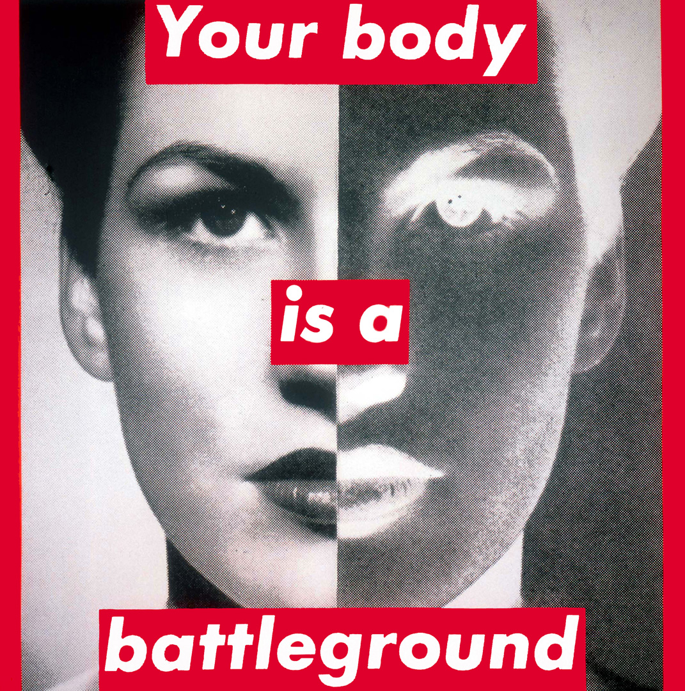

—Zazzy—
The brand was founded by James Jebbia. Although he was born in the United States, he lived in England until he was 19. The first Supreme store opened on Lafayette Street in downtown Manhattan in April of 1994. Supreme stocks its own clothing label and Vans, Nike SB, Spitfire, Thrasher and Girl Distribution Company.

Did you know it cost around $12,000 to open Supreme back in 1994

The exact story is still a little unclear; Supreme admitted to using Renner’s font in the same way Kruger did, recognizable by the typeface over text block format. This logo originally came about when Jebbia’s friend mocked up the original designs, which James felt looked a little flat, so he lent the designer a book on New York conceptual artist Barbara Kruger for inspiration. The new Supreme logo was a really bold and simple statement which perfectly complemented the clean style of the store itself. The Box Logo design was a direct homage to Kruger’s “text box” propaganda art style and the first case of the NY skate brand “sampling” other people’s designs – a concept it has successfully run with for the past two decades.
Being one of the most recognizable brands, Supreme makes a profit of around $7 million per seasonal drop making it the most successful and hyped brands. Roughly, it takes around 12 minutes for a whole season drop to go out of stock. The average amount of money for a Supreme t-shirt is $80/£59.
Supreme is officially categorized a streetwear brand in the fashion community. It can be hard to describe because, technically, a lot of people utilize the concepts without really realizing it. The easiest way to understand streetwear is clothing that emphasizes comfort while mixing high fashion and budget brands, and also draws in various subcultures (like skateboarding, hip hop, etc). Supreme is commonly associated with “hype beasts”, these “hype beasts” are typically characterized as young teenage boys who are ungrateful for the huge amounts of money their parents spend on them. Supreme play on their audience and release some questionable items to prove once again that the generalization of their audience holds up to some weight.
Did you know Palace had a total of $5,792,251 net worth in 2017
The brand was founded by James Jebbia. Although he was born in the United States, he lived in England until he was 19. The first Supreme store opened on Lafayette Street in downtown Manhattan in April of 1994. Supreme stocks its own clothing label and Vans, Nike SB, Spitfire, Thrasher and Girl Distribution Company.
In the late ‘00s, Lev Tanju and a number of other London skaters were living in a squat flat in Waterloo near London’s iconic Southbank skate park. Ironically referred to as ‘The Palace’, the squat’s regular inhabitants became jokingly known as the ‘Palace Wayward Boys’ Choir’, a play on the Victorian religious charity organizations you’d expect to read about in a Charles Dickens novel. When Tanju decided to start his own skate brand down the line, the name was obvious; Palace. Once a name had been settled on and a game plan for his new brand worked out, Tanju’s next move was to come up with a logo. He wanted to create one that would have the same recognition as those of Nike, Apple and Adidas. Creating something that would be as instantly recognisable as these brands would not be an easy feat, but luckily for Tanju he managed it. He enlisted the help of legendary London-based illustrator Fergus Purcell (also known as ‘Fergadelic’) who, alongside designing logos for his own brands Tonite and Silas, had designed for the likes of Stussy. Tanju went to Purcell with his brand’s strategy and the latter soon came back to him with a logo he thought would work well. He gave Tanju a spin on Oscar Reutersvärd’s Penrose Triangle, which this time featured Palace branding on each side of the triangle. The name? Well Tri-Ferg seemed appropriate, seeing as it was a triangle created in a sense by Fergadelic.
Similar to Supreme, Palace is another recognizable brand that sells out of stock within minutes. Palace's stock lasts roughly 30 minutes before it is sold out ready to be restocked every weekend Sunday 12am BST. The average amount for a Palace t-shirt is $82/£62.5.
One of the things that immediately set Palace apart from other skate brands in the scene was the distinctive lo-fi aesthetic of their videos. At a time when the skate industry, like everyone else, was pushing ever further toward HD 1080p video and surround sound, Palace suddenly popped up with a series of short, grainy videos that looked like they’d come straight out of the ‘90s. Tanju’s reasoning for this choice was that, when he watched classic ‘90s skate videos, there was something about the raw, low quality that the newer technology seemed to lose. Combined with the laid-back, “who cares” attitude of their videos and DIY aesthetic, Palace’s early videos looked like the kind of footage you’d film with your mates with a crappy handicam on the weekends, and captured the essence of street skating.
| Garm | Brand | Price | Worth it? |
|---|---|---|---|
| White Logo Box T-shirt | Supreme | $29/£21.47 | Price yes, basicness no |
| White Tri-Ferg T-shirt | Palace | $37/£27.39 | Price and style yes |
| Palace Brady Pro S12 Deck 8.125" | Palace | $60.79/£45 | Price and brand yes |
Which was your favourite high-end brand? Palace Supreme